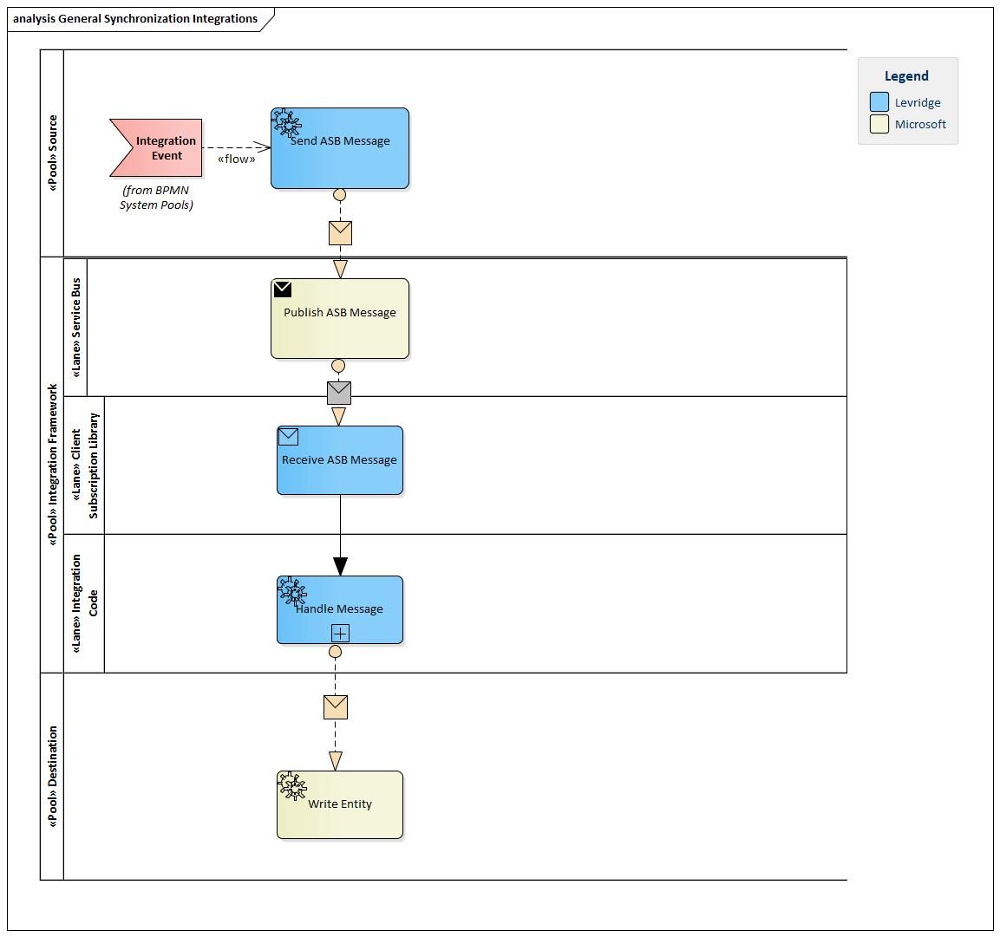

Introduction
The Levridge integration framework provides integration between Dynamics365 Finance and Operations and Dynamics 365 Customer Engagement and 3rd party applications.
This document provides and overview of the integration framework and links to the document that exists for the framework.
Overview
The Levridge Integration Framework is an entity syncronization framework. It provides a means to synchronize data at an entity level between multiple data sources.
All integrations that use the framework follow the same pattern: 1. A data source has an integration event 2. The data source responds to the integration event by sending one or more entities to the service bus. 3. The service bus publishes the message(s) to each subscription 4. An instance of the integration framework receives the message(s) from a subscription 5. The integration framework transforms the message it if needed 6. The integration framework sends the message to the target data source

Integrations
Currently we support the following integrations: